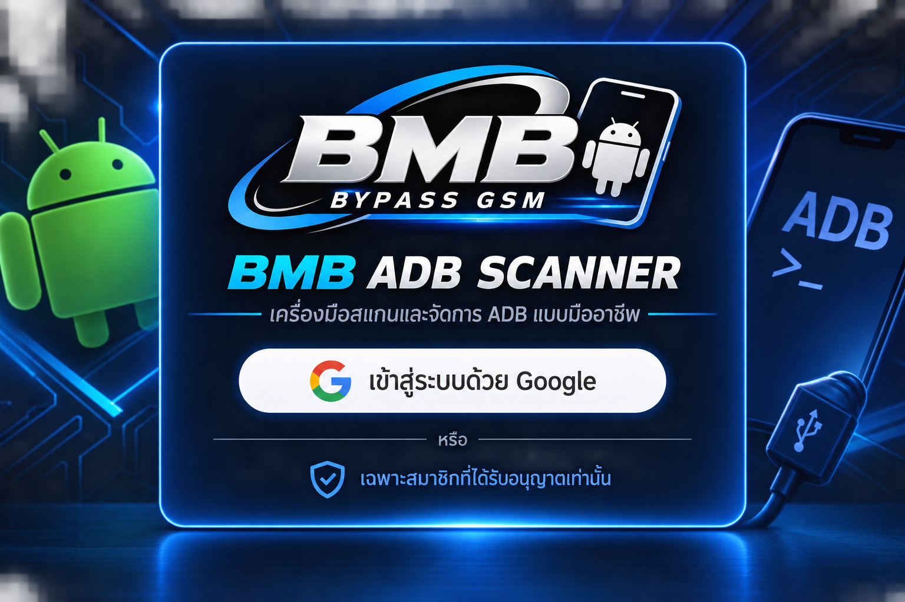

- เชื่อมโทรศัพท์และคอมพิวเตอร์กับเครือข่ายเดียวกัน
- เปิด BMB Companion บนโทรศัพท์ แล้วกด Scan / Export Report
- ส่งออกไฟล์
BMB_Companion_Report.json - กลับมาที่เว็บไซต์ กด “เลือกไฟล์รายงานแอป” แล้วเลือกไฟล์นั้น

ระบบเข้าสู่ระบบสมาชิก
กรุณาเข้าสู่ระบบด้วย Google เพื่อตรวจสอบสิทธิ์ก่อนใช้งาน
สแกน ตรวจสอบสิทธิ์ และจัดการแอป Android ผ่าน USB
ผลสแกนเป็นการคัดกรองจากชื่อแพ็กเกจและข้อมูลสิทธิ์ ไม่ใช่การยืนยันว่าเป็นมัลแวร์ โปรดตรวจสอบก่อนถอนทุกครั้ง
[INFO] ADB Scanner Manager พร้อมใช้งาน
เว็บเบราว์เซอร์ไม่สามารถอ่านรายชื่อแอปหรือถอนแอปในโทรศัพท์ได้โดยตรง กรุณาเลือกไฟล์รายงาน JSON ที่ส่งออกจาก Android Companion หรือเครื่องมือจัดการแอปบนโทรศัพท์
BMB_Companion_Report.jsonหมายเหตุ: Wi-Fi และ USB ในรุ่นนี้ใช้ส่งไฟล์รายงาน ไม่ใช่การเชื่อมต่อสด (Live) และไม่ใช้ ADB / USB debugging
สีแดง/ส้มหมายถึงพบข้อมูลตรงฐานข้อมูลหรือสัญญาณที่ควรตรวจสอบ ไม่ใช่ข้อยืนยันว่าเป็นไวรัส การถอนติดตั้งต้องตรวจสอบและยืนยันบนโทรศัพท์ด้วยตนเอง
[INFO] โหมด SCAN ไม่เปิด ADB พร้อมใช้งาน